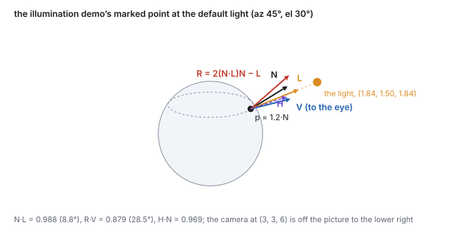
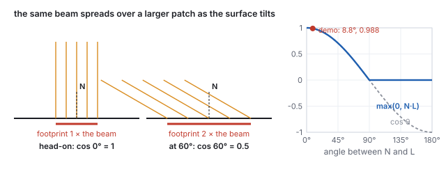
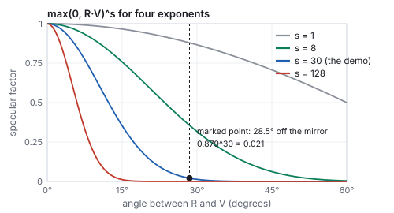
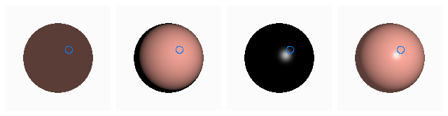
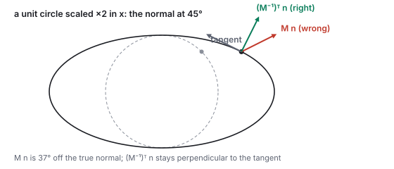
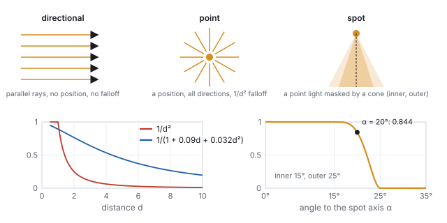
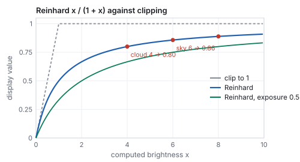

This chapter links to the course’s interactive demos and uses MathJax for its
formulas. Read it through the course website (or download the file and open it in a
browser); a Canvas inline preview will reach neither the demos nor the math.
All chapters.
Local Illumination: Lambert, Phong, and Lights
CSS 551 · Advanced 3D Computer Graphics · course text
Course text · the shading of one surface point from three directions: the diffuse cosine, the specular highlight in Phong’s and Blinn’s forms, the ambient constant, the rule for normals under a transform, the three light types with their falloff, and tone mapping. Assigned by your offering’s course site; pairs with the illumination lecture and the illumination demo.
A textured sphere without shading is a disk with a picture on it. What makes it read as a ball is the
way its brightness varies: bright where it faces the light, dark where it turns away, with a glint where
it mirrors the light into the eye. The classic local model computes that from three unit vectors at each
surface point, the normal \(\mathbf{N}\), the direction to the light \(\mathbf{L}\), and the direction to
the eye \(\mathbf{V}\), as a sum of three terms, each essentially one dot product. This chapter derives
the diffuse term from Lambert’s projected-area argument, the mirror direction from the projection
split of the vectors chapter, and works every number at the illumination demo’s marked point:
\(\mathbf{N}\cdot\mathbf{L} = 0.988\), \(\mathbf{R}\cdot\mathbf{V} = 0.879\), a specular factor of
\(0.879^{30} = 0.021\), Blinn’s \(\mathbf{H}\cdot\mathbf{N} = 0.969\), and the final color. It then covers
what the model needs around it: the correct transform for normals, the directional, point and spot
sources with their falloff, the sum over several lights, and the tone-mapping step that fits an
unbounded brightness onto a display.
Definition (the shading vectors)
At a surface point \(\mathbf{p}\): \(\mathbf{N}\) is the unit surface normal (the vertex normal of
the meshes chapter, interpolated to the pixel); \(\mathbf{L}\) is the
unit vector from \(\mathbf{p}\) toward the light; \(\mathbf{V}\) is the unit vector from
\(\mathbf{p}\) toward the eye. A local illumination model computes the color at \(\mathbf{p}\) from
these three vectors and the material, and from nothing else in the scene.
The convention that \(\mathbf{L}\) points toward the light, not along the light’s travel, is what
makes “facing the light” mean \(\mathbf{N}\cdot\mathbf{L}\) near 1; a sign slip here inverts the
whole model. Because all three are unit vectors, every dot product below is the cosine of an angle
(the vectors chapter).
The word local is the model’s honest scope. It captures direct light: matte falloff,
highlights, per-light attenuation. It ignores everything that involves other surfaces: a red wall
tinting a white floor, soft shadows, a floor reflecting the room, the darkening in a crease. Those are
the global effects of the light-transport
chapter, and they cost tracing light around the scene. The local model buys a handful of dot
products per pixel with that omission, and one of its three terms exists only to apologize for it.
The worked instance throughout is the illumination demo’s: a sphere of radius 1.2 at the origin,
the camera at \((3, 3, 6)\), a point light on an orbit of radius 3 whose default position is azimuth
\(45^\circ\), elevation \(30^\circ\), and one marked point where the normal is
\(\mathbf{N} = \mathrm{normalize}(1, 1, 1) = (0.577, 0.577, 0.577)\). For a sphere at the origin the
outward normal at any point is the point normalized, so \(\mathbf{p} = 1.2\,\mathbf{N} = (0.693, 0.693, 0.693)\).

The five vectors at the marked point with the light at its default position. \(\mathbf{R}\) is the mirror image of \(\mathbf{L}\) about \(\mathbf{N}\); \(\mathbf{H}\) bisects \(\mathbf{L}\) and \(\mathbf{V}\). The camera is off the picture.
Worked example (the light and \(\mathbf{L}\))
Azimuth \(a\) and elevation \(e\) on an orbit of radius 3, the same spherical formula as the camera of
the viewing chapter:
\(\text{light} = 3\,(\cos e \sin a,\; \sin e,\; \cos e \cos a) = 3\,(0.6124, 0.5, 0.6124) = (1.837, 1.500, 1.837)\).
Then \(\text{light} - \mathbf{p} = (1.144, 0.807, 1.144)\), of length 1.808, so
\(\mathbf{L} = (0.633, 0.446, 0.633)\). The eye: \((3, 3, 6) - \mathbf{p} = (2.307, 2.307, 5.307)\), length 6.23,
\(\mathbf{V} = (0.370, 0.370, 0.852)\). \(\mathbf{V}\) does not change when the light moves.
2 · Diffuse: Lambert’s cosine
A matte surface (chalk, paper, plaster) scatters incoming light equally in every direction, so its
brightness does not depend on where the eye is. It depends only on how much light lands on each unit
of area, and that is a projected-area question. A beam of fixed cross-section striking the surface
head-on covers a patch equal to its cross-section; striking at an angle \(\theta\) from the normal, the
same beam spreads over a patch \(1/\cos\theta\) times larger, so each unit of surface receives
\(\cos\theta\) of the head-on energy. Johann Heinrich Lambert measured this in 1760.

The same beam over a footprint \(1/\cos\theta\) times larger as the surface tilts, and the resulting factor \(\max(0, \mathbf{N}\cdot\mathbf{L})\), with the marked point at the default light marked.
Definition (the diffuse term)
\[
\text{diffuse} = k_d\, I_{\text{light}}\, \max(0,\; \mathbf{N}\cdot\mathbf{L}),
\]
with \(k_d\) the material’s diffuse reflectance (its base color, per channel; a texture supplies it
per pixel) and \(I_{\text{light}}\) the light’s color and intensity. The clamp is the back-face rule:
past \(90^\circ\) the cosine is negative, and a surface turned away from the light receives nothing, not
negative light.
Worked example (\(\mathbf{N}\cdot\mathbf{L}\) at the marked point)
With all three components of \(\mathbf{N}\) equal to 0.577,
\[
\mathbf{N}\cdot\mathbf{L} = 0.577\,(0.633 + 0.446 + 0.633) = 0.577 \times 1.712 = 0.988,
\]
an angle of \(8.8^\circ\): the marked point faces almost straight into the light, and the diffuse factor
is \(\max(0, 0.988) = 0.988\). Swing the light behind the sphere, to azimuth \(225^\circ\) and elevation
\(-30^\circ\): the light is at \((-1.837, -1.500, -1.837)\), \(\mathbf{L} = (-0.603, -0.523, -0.603)\), and
\(\mathbf{N}\cdot\mathbf{L} = -0.998\), nearly antiparallel. The clamp makes the diffuse factor exactly 0.
The demo’s panel prints both numbers.
This one clamped dot product is the workhorse of real-time shading; most of what makes a scene read as
lit is the diffuse term. Because the term is per channel, a red light on a white surface gives red
diffuse, and a white light on a red texture gives red diffuse too: \(k_d\) and \(I_{\text{light}}\)
multiply.
3 · Specular: the mirror direction, Phong and Blinn
A glossy surface (plastic, wet paint, polished metal) adds a compact bright spot, the reflection of the
light source itself. Unlike diffuse it is view-dependent: the spot sits where the surface mirrors the
light toward this eye, and it slides as the eye moves. A perfect mirror shows the light only when the
eye is exactly on the mirror direction; a slightly rough surface spreads the spot around it.
The mirror direction
Reflecting \(\mathbf{L}\) about \(\mathbf{N}\) keeps its component along \(\mathbf{N}\) and negates the
component in the surface. With the projection split
\(\mathbf{L} = (\mathbf{N}\cdot\mathbf{L})\mathbf{N} + [\mathbf{L} - (\mathbf{N}\cdot\mathbf{L})\mathbf{N}]\),
\[
\mathbf{R} = (\mathbf{N}\cdot\mathbf{L})\mathbf{N} - [\mathbf{L} - (\mathbf{N}\cdot\mathbf{L})\mathbf{N}] = 2(\mathbf{N}\cdot\mathbf{L})\mathbf{N} - \mathbf{L}.
\]
It is unit when \(\mathbf{N}\) and \(\mathbf{L}\) are. Checks: \(\mathbf{L} = \mathbf{N}\) gives
\(\mathbf{R} = \mathbf{N}\) (a head-on ray reflects back); \(\mathbf{N}\cdot\mathbf{L} = 0\) gives
\(\mathbf{R} = -\mathbf{L}\) (a grazing ray continues, flipped).
Definition (the Phong specular term)
\[
\text{specular} = k_s\, I_{\text{light}}\, \max(0,\; \mathbf{R}\cdot\mathbf{V})^{s},
\]
with \(k_s\) the specular color (near white for plastics, since the highlight is the light’s color,
not the surface’s) and \(s\) the shininess exponent. Raising a cosine below 1 to a high power
collapses it: a large \(s\) is a tight highlight, a small \(s\) a broad sheen.
Worked example (\(\mathbf{R}\), \(\mathbf{R}\cdot\mathbf{V}\), and the exponent)
\(2(\mathbf{N}\cdot\mathbf{L}) = 1.977\), so \(2(\mathbf{N}\cdot\mathbf{L})\mathbf{N} = (1.141, 1.141, 1.141)\) and
\(\mathbf{R} = (1.141, 1.141, 1.141) - (0.633, 0.446, 0.633) = (0.508, 0.695, 0.508)\), which is unit.
Then
\[
\mathbf{R}\cdot\mathbf{V} = 0.508\cdot0.370 + 0.695\cdot0.370 + 0.508\cdot0.852 = 0.879,
\]
an angle of \(28.5^\circ\) between the mirror direction and the eye. The specular factor for several
exponents:
\(s\)
\(0.879^s\)
look
1
0.879
a broad wash, no visible spot
8
0.356
a soft sheen
30 (the demo)
0.021
a tight, plausible plastic highlight; the marked point is on its skirt
128
\(6.6\times10^{-8}\)
a pinpoint; nothing \(28^\circ\) off the mirror survives
\(0.021\) is the demo panel’s specular reading at the default shininess.

\(\max(0, \mathbf{R}\cdot\mathbf{V})^s\) against the angle to the mirror direction. The exponent sets the highlight’s width; the marked point sits \(28.5^\circ\) off the mirror direction.
Jim Blinn’s 1977 variant replaces the mirror test with a half-vector test. Let
\(\mathbf{H} = \mathrm{normalize}(\mathbf{L} + \mathbf{V})\), the direction bisecting light and eye; the
surface mirrors the light into the eye exactly when \(\mathbf{N} = \mathbf{H}\), so
\(\max(0, \mathbf{H}\cdot\mathbf{N})^s\) peaks in the same place as Phong’s term. It needs no
reflection vector, behaves better at grazing angles, and for a directional light and a distant eye
\(\mathbf{H}\) is constant over the whole surface; it is what most engines, three.js included, actually
compute. The two are not numerically equal.
Worked example (Blinn at the same point)
\(\mathbf{L} + \mathbf{V} = (1.003, 0.817, 1.485)\), length 1.97, \(\mathbf{H} = (0.509, 0.415, 0.754)\), and
\(\mathbf{H}\cdot\mathbf{N} = 0.577\,(0.509 + 0.415 + 0.754) = 0.969\). The half angle is roughly half the
mirror angle (\(14.3^\circ\) against \(28.5^\circ\)), so Blinn’s cosine is larger: at \(s = 30\),
\(0.969^{30} = 0.387\) against Phong’s 0.021. To match Phong’s value at this point Blinn needs
\(s = 123\), about four times the exponent, the usual rule of thumb. The demo’s panel computes
classic Phong while its material renders Blinn, so the printed \(\mathbf{R}\cdot\mathbf{V}\) and the rendered
highlight agree in position and in how they tighten with \(s\), not digit for digit.
4 · Ambient, and the whole sum
Both terms vanish where no light arrives directly, and a scene shaded by them alone has shadows of
pure black. Real shadows are not black; light bounces off every other surface and fills them, and that
is exactly what the local model refuses to compute. The ambient term stands in for all of it with
a constant, \(k_a\, I_{\text{ambient}}\), the same at every point regardless of direction. It has no
physical derivation; too much of it flattens the scene (every point gets the same floor and the shape
cues of the diffuse term wash out), too little makes shadows inky.
Definition (the Phong reflection model)
\[
\text{color} = k_a I_a \;+\; k_d I \max(0, \mathbf{N}\cdot\mathbf{L}) \;+\; k_s I \max(0, \mathbf{R}\cdot\mathbf{V})^s,
\]
per color channel, summed over the lights (Section 6), then fitted to the display (Section 7).
Bui Tuong Phong, 1975.
Worked example (the color at the marked point)
Take a red plastic: \(k_a = 0.12\), \(k_d = (0.86, 0.36, 0.30)\), \(k_s = 0.5\), \(s = 30\), a white light and
white ambient of intensity 1. Ambient: \(0.12\,k_d = (0.103, 0.043, 0.036)\). Diffuse:
\(0.988\,k_d = (0.850, 0.356, 0.297)\). Specular: \(0.5\times0.021 = 0.010\) on every channel. Sum:
\((0.964, 0.409, 0.343)\). The diffuse term dominates because the point faces the light; the specular
adds a hundredth because the point is on the skirt of the highlight, and it adds equally to all three
channels, which is why highlights on colored plastic are white.

The demo’s sphere from the demo’s camera, ray-cast and shaded by this chapter’s formula one term at a time: ambient, diffuse, specular, and their sum. The blue ring marks the worked point; its pixel in the sum panel is \((0.964, 0.409, 0.343)\) before display encoding.
See it liveLight a sphere: one
sphere, one orbiting point light, and the marked point of this chapter, with the four scalars
\(\mathbf{N}\cdot\mathbf{L}\), \(\mathbf{R}\cdot\mathbf{V}\), diffuse and specular computed live in the course
library’s vector code. Drag the light behind the sphere and watch the diffuse clamp to zero; raise
the shininess and watch the highlight tighten.
Whether the sum is evaluated per vertex and interpolated (Gouraud) or per pixel from an interpolated
normal (Phong shading) is the choice shown in
the meshes chapter; the specular term is what makes the difference
visible.
5 · Normals under a transform
Every term above starts from \(\mathbf{N}\), and \(\mathbf{N}\) is stored in the model’s own frame.
Positions go to world space through the model matrix \(M\); normals must not. A normal is defined by
perpendicularity to the surface, and a non-uniform scale or a shear does not preserve right angles:
push the normal through \(M\) and it leans off the surface. The
affine chapter derives the rule; here is the figure and the number.
The normal matrix
If positions transform by \(M\) (its linear part \(A\)), normals transform by \((A^{-1})^{\top}\), then
renormalize. For a rotation \((A^{-1})^{\top} = A\) and nothing changes; the rule matters only under
scaling and shear, which is why the bug hides until someone squashes a model.

A unit circle scaled \(2\times\) in \(x\). At the point that was at \(45^\circ\), the normal pushed through \(M\) leans \(37^\circ\) off the true normal; the inverse transpose keeps it perpendicular to the tangent.
Worked example (the ellipse)
\(A = \mathrm{diag}(2, 1)\); the point \((0.707, 0.707)\) with normal \(\mathbf{n} = (0.707, 0.707)\) moves to
\((1.414, 0.707)\), where the ellipse’s tangent is \((-0.894, 0.447)\). Wrong: \(A\mathbf{n} = (1.414, 0.707)\),
normalized \((0.894, 0.447)\), whose dot with the tangent is \(-0.6\), not perpendicular. Right:
\((A^{-1})^{\top} = \mathrm{diag}(0.5, 1)\), \((0.354, 0.707)\), normalized \((0.447, 0.894)\), dot with the tangent
\(0\). The two candidates are \(36.9^\circ\) apart, and every cosine in the model is off by that much.
Engines compute the normal matrix once per object and pass it to the vertex shader. When a shader has
only \(M\), a serviceable substitute transforms two points, \(\mathbf{p}\) and \(\mathbf{p} + \mathbf{n}\),
and takes the normalized difference; for a rigid \(M\) it is exact, and under scaling it is an
approximation that improves as the step along the normal shrinks relative to the surface’s curvature.
6 · Light sources: directional, point, spot
\(\mathbf{L}\) and \(I_{\text{light}}\) come from a light source, and engines have three kinds.

The three light types; distance attenuation, physical and tunable; and the spot cone with inner angle \(15^\circ\) and outer angle \(25^\circ\).
Directional (the sun): a direction and no position. \(\mathbf{L}\) is the same constant
vector at every point, and there is no falloff. Cheapest.
Point (a bulb): a position radiating in all directions. \(\mathbf{L}\) is computed per
point, as in Section 1, and the intensity falls with distance. A source of fixed power spreads over a
sphere of area \(4\pi d^2\), so the physical falloff is \(1/d^2\): twice the distance, a quarter of the
light. Engines often use a tunable \(1/(k_c + k_l d + k_q d^2)\) whose constant term keeps the value
finite at \(d = 0\), and a cutoff radius beyond which the light is skipped entirely.
\(d\)
\(1/d^2\)
\(1/(1 + 0.09d + 0.032d^2)\)
1
1
0.891
2
0.25
0.765
4
0.0625
0.534
10
0.01
0.196
Spot (a flashlight): a point light masked by a cone about an aim direction
\(\mathbf{D}\). With \(\alpha\) the angle between \(-\mathbf{L}\) and \(\mathbf{D}\), the mask is 1 inside an
inner angle \(\theta_{\min}\), 0 outside an outer angle \(\theta_{\max}\), and a smooth fade between,
multiplied into the light’s intensity. The classroom shader fades with
\(\mathrm{smoothstep}\bigl(1 - (\theta_{\min} - \alpha)^2 / (\theta_{\max} - \theta_{\min})^2\bigr)\), where
\(\mathrm{smoothstep}(t) = 3t^2 - 2t^3\). David Warn introduced the cone and its controls in 1983.
Worked example (the spot’s edge)
\(\theta_{\min} = 15^\circ\), \(\theta_{\max} = 25^\circ\), \(\alpha = 20^\circ\): \((15 - 20)^2 / 10^2 = 0.25\),
\(t = 0.75\), \(\mathrm{smoothstep}(0.75) = 3(0.5625) - 2(0.4219) = 0.844\). At \(18^\circ\) the mask is 0.977, at
\(22^\circ\) 0.515, at \(25^\circ\) 0: a soft penumbra ten degrees wide.
The model is linear in the light, so several lights simply add: each contributes its own diffuse and
specular with its own \(\mathbf{L}\), \(\mathbf{R}\), color and attenuation, and the ambient term is added
once. A second light at azimuth \(200^\circ\), elevation \(20^\circ\), at half intensity, sees the marked
point with \(\mathbf{N}\cdot\mathbf{L}_2 = -0.719\): its contribution there is zero, and the total diffuse
stays 0.988. The cost is lights times shaded pixels, which is why real-time engines cap how many lights
touch each object or restructure the loop (deferred and clustered shading) to keep it bounded.
7 · Brightness has no ceiling: tone mapping
Several lights and a bright specular push the computed sum past 1, and that is correct: real
luminance spans many orders of magnitude, and a lighting sum is naturally high dynamic range.
The display is not; it shows \([0, 1]\), where 1 is its brightest white. Clipping everything above 1
turns a sky at 6, a cloud at 4 and the sun at 40 into the same white, every distinction gone. A
tone-mapping curve compresses the unbounded range into \([0, 1)\) while keeping bright values
ordered.

Reinhard’s \(x/(1+x)\) against clipping, and the same curve at half exposure. Values that clipping would merge stay distinct.
Worked example (Reinhard)
The simplest respectable curve (Reinhard, Stark, Shirley and Ferwerda, 2002) is \(x/(1 + x)\):
\(x\)
0.25
0.5
1
2
4
8
40
\(x/(1+x)\)
0.200
0.333
0.500
0.667
0.800
0.889
0.976
Small values pass nearly unchanged, so shadows and midtones keep their look; large values are squeezed
toward 1 without reaching it. Cloud, sky and sun become 0.800, 0.857 and 0.976, three distinct grays where
clipping gave three whites. An exposure factor scales \(x\) first and chooses what counts as
middle gray: at exposure 0.5 the sun maps to \(20/21 = 0.952\) and the sky to \(3/4 = 0.75\). Production
pipelines use steeper film-like curves (the ACES curve is the common one), and all of them go last,
after every light has been summed, right before the value is written to the framebuffer and gamma-encoded
for the display (see the light-transport chapter on
why the encoding is not linear).
8 · Where the local model ends
The Phong model is a description of what shading looks like, not of what light does. Its specular
lobe is not energy-conserving (a high exponent reflects less total light than a low one, for no
physical reason), its ambient term is a confession, and it has no notion of a surface being metal or
dielectric beyond the color of \(k_s\). The light-transport
chapter replaces the sum with the rendering equation and the specular term with a microfacet
model whose parameters (roughness, metalness) mean something measurable, and
the learned-scenes chapter dispenses with the surface altogether. The
three vectors, the cosine, and the clamp survive every one of those upgrades.
Papers
J. H. Lambert, Photometria, 1760. H. Gouraud, “Continuous Shading of Curved Surfaces,”
IEEE Transactions on Computers C-20(6), 1971. B. T. Phong, “Illumination for Computer Generated
Pictures,” Communications of the ACM 18(6), 1975. J. Blinn, “Models of Light Reflection for
Computer Synthesized Pictures,” SIGGRAPH 1977. D. Warn, “Lighting Controls for Synthetic
Images,” SIGGRAPH 1983. E. Reinhard, M. Stark, P. Shirley and J. Ferwerda, “Photographic Tone
Reproduction for Digital Images,” SIGGRAPH 2002.
9 · Exercises
Exercise 1 (diffuse)
Move the demo’s light to azimuth \(90^\circ\), elevation \(0^\circ\) (on the \(x\) axis). Compute \(\mathbf{L}\) and the diffuse factor at the marked point.
Solution
Light at \((3, 0, 0)\); \(\text{light} - \mathbf{p} = (2.307, -0.693, -0.693)\), length 2.507, \(\mathbf{L} = (0.920, -0.276, -0.276)\); \(\mathbf{N}\cdot\mathbf{L} = 0.577\,(0.920 - 0.276 - 0.276) = 0.212\), an angle of \(77.8^\circ\). The point is lit, dimly: a fifth of full brightness.
Exercise 2 (the mirror direction)
For \(\mathbf{N} = (0, 1, 0)\) and \(\mathbf{L} = (0.6, 0.8, 0)\), compute \(\mathbf{R}\) and verify it is unit and makes the same angle with \(\mathbf{N}\) as \(\mathbf{L}\) does.
Solution
\(\mathbf{N}\cdot\mathbf{L} = 0.8\); \(\mathbf{R} = 1.6\,(0, 1, 0) - (0.6, 0.8, 0) = (-0.6, 0.8, 0)\); length \(\sqrt{0.36 + 0.64} = 1\); \(\mathbf{R}\cdot\mathbf{N} = 0.8 = \mathbf{L}\cdot\mathbf{N}\). The in-surface component flipped sign, the along-normal component did not.
Exercise 3 (shininess)
An eye \(10^\circ\) off the mirror direction. What specular factor at \(s = 30\), and what exponent would halve it?
Solution
\(\cos 10^\circ = 0.985\); \(0.985^{30} = 0.633\). Halving needs \(0.985^s = 0.316\), \(s = \ln 0.316 / \ln 0.985 = 75\). Doubling the exponent roughly squares the factor, so the highlight’s width shrinks like \(1/\sqrt{s}\).
Exercise 4 (Blinn)
Show that \(\mathbf{H}\cdot\mathbf{N} = 1\) exactly when \(\mathbf{R} = \mathbf{V}\).
Solution
\(\mathbf{H} = \mathbf{N}\) means \(\mathbf{L} + \mathbf{V}\) is along \(\mathbf{N}\), so \(\mathbf{V}\) and \(\mathbf{L}\) have opposite in-surface components and equal along-normal components (both unit): \(\mathbf{V} = 2(\mathbf{N}\cdot\mathbf{L})\mathbf{N} - \mathbf{L} = \mathbf{R}\). Conversely \(\mathbf{R} = \mathbf{V}\) gives \(\mathbf{L} + \mathbf{V} = 2(\mathbf{N}\cdot\mathbf{L})\mathbf{N}\), along \(\mathbf{N}\). The two highlights peak at the same place.
Exercise 5 (attenuation)
A point light of intensity 1 at distance 4 under \(1/d^2\) falloff, and the same light under the polynomial of Section 6. How much brighter must the physical light be to match the polynomial’s value at \(d = 4\)?
Solution
\(1/16 = 0.0625\) against \(0.534\): a factor of \(8.5\). The polynomial is not physics; it is an artist’s falloff that keeps distant objects readable without a light bright enough to blow out near ones.
Exercise 6 (tone mapping)
Two pixels compute to 3 and 30. What is their ratio on screen after clipping, after Reinhard, and after Reinhard at exposure 0.1?
Solution
Clipping: both 1, ratio 1. Reinhard: \(0.75\) and \(0.968\), ratio 1.29. Exposure 0.1: \(0.3 \mapsto 0.231\) and \(3 \mapsto 0.75\), ratio 3.25. Lower exposure spends more of the display range on the bright end; the ratio of 10 is never recovered, since that is what compression means.